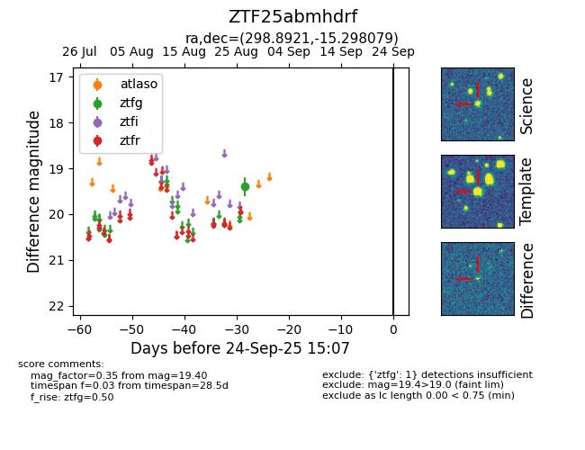

FINK: ZTF25abmhdrf
Lasair: ZTF25abmhdrf
ALeRCE: ZTF25abmhdrf
ZTF25abmhdrf (ztf,fink)
equatorial (ra, dec) = (298.8921,-15.29808)
galactic (l, b) = (25.9615,-20.94053)

last ztfg=19.40
1 ztfg detections